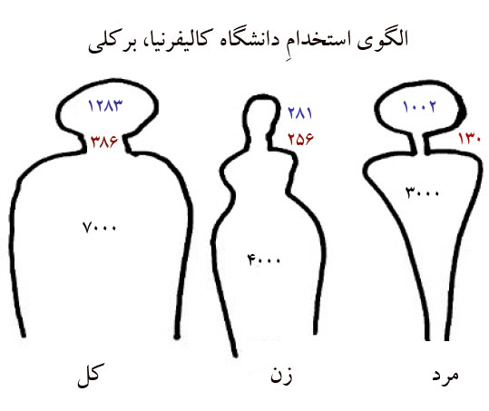
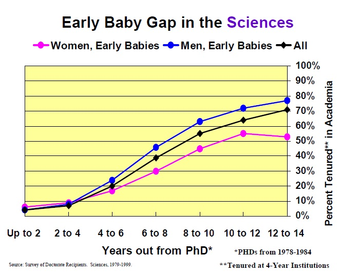
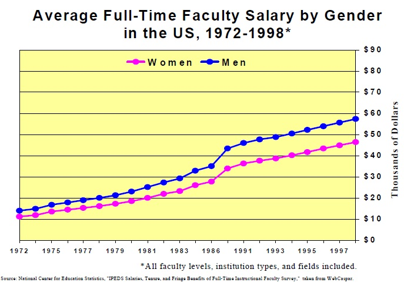

پذيرش > سایت نوشته ها > آیا بچه ها مسئله اند؟ / برگردان : پرستو اله یاری


 آیا بچه ها مسئله اند؟ / برگردان : پرستو اله یاری آیا بچه ها مسئله اند؟ / برگردان : پرستو اله یاری
6 خرداد 1391 - - نسخه قابل چاپ
تا قانون خانواده برابر: زمانی که برای اولین بار در سال گذشته رئیس یکی از بخش های آموزشی دانشگاه برکلی شدم، احساس فوق العاده ای داشتم. پنجاه و یک درصد از 2500 دانشجوی جدید که به آنها سال تحصیلی جدید را خوش آمد می گفتم، زن بودند. سی و پنج سال پش این رقم نزدیک 10 درصد بود. دانشجویان فارغ التحصیل همه شان به دنبال مدرک دکترا[1] نبودند، بلکه بسیاری شان در جستجوی مدرک حرفه ای[2] در حقوق، سلامت عمومی، رفاه اجتماعی، بینایی سنجی و رشته های دیگر بودند. برکلی دانشکده پزشکی نداشت، ولی اگر داشت، زنان در رشته پزشکی هم به این مهم به خوبی دست می یافتند.
رشد فزاینده مشارکت زنان در درجات عالی تحصیلی نشان دهنده استعداد طبیعی آنها است. و اگر به طور نمونه در رشته های فنی و مهندسی، زنان کمتری نسبت به ادبیات انگلیسی دکتری گرفته اند، به خاطر تفاوت هایی است که بین انتظام این دو رشته وجود دارد. به طور کلی حضور زنان در تحصیلات عالی و مشارکت آنها در سطح دکترا و پروفسوری، متاسفانه، تازه از سال 1966 افزایش یافت. تعداد زنانی که دکترا گرفتند از 12% به 42% افزوده شد و علاوه بر آن تعداد زنانی که درجه حرفه ای را هم کسب کردند به سرعت زیاد شد. به طور نمونه، سی سال پیش از هر کلاس حقوق تنها 5% زنان به عنوان وکیل فارغ التحصیل می شدند در حالی که این تعداد امروز به 45% افزایش یافته است.
آیا این صعود پایدار در رسیدن به درجات بالای تحصیلی بعد از گذشت سی سال نشان می دهد که بالاخره زنان برنده شده اند؟ آیا زنان در نهایت به برابری در حوزه دانشگاه رسیده اند؟
الگوهای استخدام در دانشگاه کالیفرنیا، برکلی، که حاکی از پژوهش در دانشگاه های مهم دیگر است، نشان می دهد که چرا برابری جنسیتی با تعداد دانشجویان فارغ التحصیل ارتباط دارد. برابری جنسیتی در بین فارغ التحصیلان دانشگاهی زمانی نزدیک به واقعیت است که این برابری در مشاغل تکمیلی دانشگاهی نیز دیده شود. در حالیکه ترکیب جنسیتی کارکنان و هیات علمی دانشگاه ها گونه ای دیگر را نشان می دهد. با استفاده از طرحواره بدن (به عنوان الگوی استفاده شده برای نشان دادن آمار) برای نشان دادن جمعیت شناختی استخدام شونده ها، به طور واضح روشن می شود که تجارب مردان و زنان در تضاد تاسف آوری قرار دارد.
شکل سمت چپ تصویر 1 با ترکیبی از داده های استخدام شده ها مشخص شده است. در قسمت سر، 1268 نفر تمام اعضای هیئت علمی، چه آنهایی که استخدام شده اند و چه استخدام نشده ها هستند که در رتبه بندی وجود دارند. تصویر وسط تعداد زنان استخدام شده را نشان می دهد. فقط 281 زن وجود دارند. بنابراین سر کوچکتر است. شکل سمت راست مردان استخدام شده را نشان می دهد. یک سر بزرگ چرا که برکلی تعداد 1002 مرد در هیئت علمی دارد.

وقتی از سر به سمت گردن حرکت می کنیم، شکل سمت چپ نشان می دهد که برکلی به طور کلی 386 پرسنل بدون رتبه دارد که وظایف کاری آنها سخنرانی، استاد فرعی و مجموعه ای از بقیه کارهای دانشگاهی تمام کسانی است که تدریس می کنند. دلیل اهمیت ویژه ی گردن این است که سریع تر از بخش های تحصیلی دیگر رشد می کند و تعداد نفراتش زیاد می شود. پروفایل زنان در وسط نمایش داده شده است، یک گردن قابل توجه که با سر رقابت می کند. 256 استاد بدون رتبه در مقایسه با 281 عضو هیئت علمی که با هم در تعامل هستند، در حالی که پروفایل مردان که در سمت راست مشاهده می شود، گردن بلند و باریک در مقایسه با سر نسبتا بزرگ، 130 استاد بدون رتبه در مقایسه با 1002 عضو هیئت علمی که با هم در تعامل هستند.
در سه تصویر شکل 1، بدن نشان دهنده کارکنان است. سمت چپ، بدن همه کارکنان برکلی را نشان می دهد: 7000 نفر. قسمت شانه ها، بالاترین سطح مدیریت را نشان می دهد که در چنبره مردان است. قسمت میانی شکل، زنان را که حاکی از بیشترین تعداد کارکنان است نشان می دهد، به خصوص پایین تر و در قسمت های غیر مدیریتی. همان طور که مشاهده می شود، زنان یک مشکلی در بدنشان دارند: یک سر واقعا کوچک، گردنی نسبتا بزرگ و تدریس کننده و جثه پرسنل عظیم و بزرگ. به علاوه تصویر سمت راست نشان می دهد که مردان هم دچار تضادند. یک سر بزرگ و گردن تدریس کننده کوچک. بالای جثه کارکنان شبیه اندام واره زنان است ولی شانه ها بزرگترند، چون آنها کارگردانان و متخصصان حرفه ای را بین کارکنان شان دارند. به سمت پایینی بدن به صورت مخروطی باریک می شوند، در عین حال که زنان بیشتر در شغلهای دفتری و سرویس های تغذیه نشان داده می شوند.
باید به این نکته توجه داشته باشید که "مشکل گردن" است و همین مشکل قابل توجهی در دیگر انواع موسسات چهار ساله است. در یک دانشگاه بزرگ بدون نقطه متمرکز پژوهشی، به عنوان مثال، تعداد اعضای پاره وقت و هیئت علمی استخدام نشده، گردن، بیشتر از تعداد استخدام شده های هیئت علمی است، سر که مهمترین قسمت است. پرسنل مدرس، که گاهی ردیف دومی ها خوانده می شوند، ترکیبی از زنان را دارد و تعداد آنها در حال رشد است. اخیرا ائتلاف نیروی کار دانشگاهی اعلام کرده است که کار آموزش توسط بیش از 50% از گروه های فارغ التحصیل شده بدون رتبه تدریس می شود.
کم بازنمایی زنان[3]
برخی تحلیل گران به این نکته اشاره می کنند که حرفه ای شدن زنان، به خوبی آنچه که مردان از خود می نمایانند نیست، چون زنان، به تازگی توانسته اند درجات بالای تحصیلی را با تعداد نفرات زیاد کسب کنند. زمان این مشکل را حل می کند. آنها پیش بینی می کنند که اگر زنان جوان متخصص بیشتری استخدام شوند و با همکاران با تجربه کار کنند، مردان به طور عمده کنار می کشند.
داده های مرکز ملی تحصیلات ثابت است و نشان می دهد که شکاف بین درصد مردان و زنانی که عضو هیئت علمی هستند، با وجود افزایش نسبی تعداد زنان با مدارک عالی، با گذشت زمان ثابت مانده است. با توجه به این که تعداد زنانی که مدرک دکترا گرفته اند، بیشتر شده است، اما درصد زنانی که عضو هیئت علمی شده اند، بسیار شبیه تعدادی است که در سال 1975 بود. وقتی داده های دستمزدها را هم بررسی می کنیم، به پدیده مشابه ای می رسیم. شکاف بین دستمزد زنان و مردان در سی سال اخیر به طور واقعی گسترده شده است.
چقدر شکاف های بین دستمزد و استخدام سازگار و ثابت هستند؟ اخیرا دو تئوری پیشرو، که لزوما متضاد هم نیستند، سعی در توضیح این شکاف های پایدار داشته اند.
تئوری اول، که به نام کلاسیک «سقف شیشه ای[4]» شناخته می شود، بر الگوی معروف تبعیض ذاتی تمرکز می کند، که زنان را از جایگاه بالای تحصیلی آکادمیک و بقیه وضعیت های برتر منع می کنند. طبق تحلیل این تئوری، مسیرهایی که زنان از ابتدای تولد طی و مطابق آن رفتار می کنند، متناقض است. مانند این که ادعا می شود نوزادان دختر بیش از نوزادان پسر می خندند، برای تشویق به رفتار خوش آیند؛ همان دختران را اندکی بعد، از این که درس سخت ریاضی یاد بگیرند، دلسرد می کنند و در عوض به دنبال روی از کلیشه های زنانه وادار می کنند. گزارش های منتشرشده از کمیته های اعضای هیئت علمی انجمن تکنولوژی ماساچوست در چند سال قبل، پیشنهاد می کرد که برای موفقیت بیشتر، زنان دانشمند از دانشگاه های معتبر را به طور سازمان دهی شده با قوانین رهبری و با آنها متفاوت از فضا و منابع محلی شان رفتار کنند. یک مفسر همین موارد جزئی را به عنوان «کاغذ هزار پاره شده»[5] بیان می کند که با وجود کوچکی، ولی زیادند و زنان را در موقعیت وابسته نگه می دارد. در این چارچوب تئوری، به خانواده توجه محیطی نشان داده می شود.
دومین مکتب نظری «کار در برابر خانواده»[6] است. این تئوری بر این باور است که انعطاف ناپذیری محیط های کاری، طبیعت آمریکایی است، که تحت نظارت و تسلط مردان در قرن نوزدهم ایجاد شده است و زنان را مجبور به انتخاب بین کار و خانواده می کرد. به جای یک کاغذ هزار پاره شده، می توان گفت شصت ساعت کار در هفته و احتیاج به همراهی مدام با بچه ها، زنان را مجبور کرد که تخصص و دانشگاه را رها کنند؛ چون شغل های دانشگاهی نیاز به حضور دائم در محل کار دارد و به این صورت زنان و خانواده ها با انتخاب سخت بین این دو مواجه بودند. مطابق این استدلال، محل زندگی بیشتر زنان آنقدر دور بود که به سادگی به MIT دسترسی نداشتند؛ ولی راه های مختلف به زودی ساخته شدند. Anne Crittenden در آخرین کتابش «بهای مادری»[7]، تمرکزش را بر روی MIT می گذارد. فقط هفت زن از شانزده زن استاد شاغل در آنجا در سال 2000 بچه داشته اند، به نظر می آید که بیشتر زنان دانشمند که بچه دارند، نمی بایست خیلی دور از خانه باشند.
داده بیشتری وجود ندارد که برای این مناظره نفرت انگیز بتوان از آن استفاده کرد، چون تا به حال، پژوهش های بسیار کمی بر الگوی کار اکثر زنان دانشگاهی انجام شده است. تا زمانی که به زنان دانشمند و مهندس در پژوهش های اصلی دانشگاهی، به طور عادلانه ای توجه شود، زنان در انسان شناسی، علوم اجتماعی، استادی که تقریبا نصف همه PhD دارها هستند، در آزمون کار خانه گروه هدف هستند؛ چرا که نه حیطه مباحث زنان کوچک است و نه پژوهش بر مبنای دانشگاه. در مجموع تقریبا هیچ توجهی به میزان دستمزد تعداد رو به گسترش زنانی که در حلقه ی دوم درجه بندی غیر مدیریتی هستند، دنباله گردن، نمی شود.

چالش های کار و خانواده
در این مقاله مدل های تشکیل خانواده و واکنش های آنها را به زندگی شغلی زنان و مردان دانشگاهی، در تمام مدتی که دکترای دانشگاهی خود را اخذ کردند و بیست سال قبل که در حال تحصیل این درجه بودند، برسی می کنیم. منبع داده های ما از غنی ترین پایگاه داده در دسترس، با حمایت بنیاد ملی علوم و دیگر سازمان های دولتی، است که مطالعه طولی دو سالانه و وزن دائم اشتغال دکترا گیرندگان را مشخص و بررسی کرده است. از داده های سال 1973 تا 1999 استفاده کرده ایم و تئوری مان را بر ساختار محل کار خانواده هایی که با بچه ها یکجا اسکان داده نشده اند، آزموده ایم. این تحقیق بین دانشگاهی های علوم، علوم اجتماعی و علوم انسانی است.
یافته های ما نشان می دهد که بدون تعجب، کودکان مسئله مهمی هستند که یک سودای بزرگ را ایجاد می کنند و به خصوص، زمان به دنیا آمدن آنها در این حوزه بسیار مهم است. شکاف بزرگ و پایداری در زمان استخدام زنانی که زود بچه دار می شوند و مردانی که زود بچه دار می شوند، وجود دارد. این شکاف به طرز شگفت آوری یک مدل در تضاد با انضباط سال های دانشگاهی، و در تضاد با وضعیت های کاری آکادمیک دیگر است. با وجود اینکه تفاوت هایی بین علوم، علوم اجتماعی و علوم انسانی وجود دارد، و تفاوت های کوچکی بین تحقیقات گسترده دانشگاه ها و کالج هنری لیبرال، ولی همچنان شکاف فرزنددار شدن، تنومند و استوار است. با تعریف ما یک بچه زود رس، باید زمانی به کارهای خانواده ملحق بشود که پنج سال به طور کامل از تکمیل مدرک PhD پدر و مادرش گذشته باشد. برای اکثر دانشگاهیان نیز به نظر می آید زمان مناسب پیشرفت در شغل به این صورت است: فارغ التحصیلی از مدرسه و استادیاری و سالهای بعد از استادی. این سالها، سالهای بسیار حیاتی هستند و در عین حال، این سالها همراه با نا امنی شغلی هم توام است.
در رشته های فنی و مهندسی، بین کسانی که به عنوان دانشگاهیان کار می کنند، مردانی که زود بچه دار شده اند، به طور قطع بسیار موفق تر از زنانی هستند که زود بچه دار شده اند. همان طور که شکل 4 نشان می دهد، به طور کلی بین زنان و مردانی که استخدام شده اند و 12 تا 15 سال زمان برای گرفتن دکتری شان سپری شده است، 24% شکاف وجود دارد. این مقایسه بر نسبت کوچکی از زنان که در علوم دکترا گرفته اند مترکز شده است. زمانی این شکاف عمیق تر می شود که مقایسه ساده ای بین تمام زنان و مردانی که در علوم هستند، انجام دهیم، چون تعداد مردانی که دکترا گرفته اند، بسیار بیشتر از زنان است. تنها مورد مشابه در آثار تحقیق در علوم اجتماعی و علوم انسانی است؛ جایی که شکاف در استخدام شدن بین زنان و مردانی که زود بچه دار می شوند 20% است. به طرز عجیبی زود بچه دار شدن به مردان کمک می کند؛ مردانی که زود بچه دار می شوند به طور آشکاری بیشتر از مردانی که در این شرایط نیستند، استخدام می شوند.

تاثیر تاخیر در بچه دار شدن، از آنجایی که بچه دار شدن به کارهایی خانواده اضافه می شود و بیش از 5 سال، گرفتن دکترا را به تاخیر می اندازد، به مراتب کمتر تاسف آور است. به طور کلی زنانی که دیر بچه دار می شوند و یا بچه دار نمی شوند، نرخ استخدام مشابهی دارند و این بیش از مقدار استخدام زنانی است که زود بچه دار می شوند. احتمالا، زنانی که دیر تر بچه دار می شوند، در زندگی کاری خود، زودتر به امنیت شغلی می رسند. به علاوه، آنها بیشتر دوست دارند، تنها یک فرزند داشته باشند.
در کل، زنانی که استخدام شده اند، بر خلاف چارچوب های موجود، دوست ندارند در طی 12 تا 15 سال برای دکترا در حیطه خانواده بچه دار بشوند؛ 62% از زنان شاغل در علوم انسانی و علوم اجتماعی و 50% در سایر علوم کسانی هستند که در حیطه خانواده بچه ندارند. بر عکس آن، تنها 39% از مردان شاغل در علوم اجتماعی و علوم انسانی و 30% در سایر علوم در طی 12 تا 14 سالی که برای دکترا PhD تلاش کرده اند، در حیطه خانواده بچه ندارند.
زنان مجرد شاغل در علوم دو برابر تعداد مردان مشابه هستند، و زنان مجرد شاغل در علوم اجتماعی و علوم انسانی، در واقع باز هم بیش از این تعداد هستند. دلایل زیادی برای زنانی که دوست دارند، مجرد بمانند و یا کمتر دوست دارند بچه دار شوند، وجود دارد؛ ولی یکی از فرضیاتی که برای خیلی از افراد وجود دارد، انتخاب شغل واقعی بر پایه مشاهدات است.
موضوع گردن
زنانی که زود بچه دار می شوند، اغلب تا به آنجا پیش نمی روند که در رتبه بندی هیئت علمی قرار بگیرند. آنها وقتی در شرایط انتخاب قرار بگیرند، به شان فشار وارد می شود که دانشگاه را رها کنند و یا آن را در اولویت دوم قرار دهند: مدرس، یا استاد اضافی و یا شاغل پاره وقت. بر خلاف نظم موجود، زنانی که زود بچه دار شده اند، ترجیح می دهند که دیرتر بچه دار می شدند و یا اصلا بچه نداشتند که به جای این که بخشی از گردن باشند، در قسمت سر بودند.
تعداد زنانی که دیرتر بچه دار شده اند و یا اصلا بچه ندارند و در این حلقه دوم یافت می شوند، کمتر از کسانی هستند که تشکیل خانواده زود هنگام را تجربه می کنند. ولی در هر صورت این گروه، نسبت به زنانی که زود بچه دار می شوند، موفق ترند، به خصوص نسبت به زنانی که هنوز به خاطر بچه هایشان متوقف مانده اند. مردان در این انضباط، بیشتر دوست دارند، استخدام هیئت علمی بشوند و کمتر ترجیح می دهند که بخشی از حلقه دوم باشند. این موضوع می رساند که بچه ها به طور کامل پاسخ گوی این شکاف جنسیتی نیستند و البته چندین عامل دیگر هم در کار وجود دارد که شاید شامل تبعیض کاغذ هزار پاره هم بشود.
اتخاذ تصمیم
داده های SDR طیف وسیعی از دستمزدها را در طول زمان نشان می دهد. سوالی که پیش می آید این است که مردم چگونه و به چه دلیل تصمیمات حرفه ای را می گیرند؟ برای پاسخ به این پرسش، داده های پژوهشی را در بین بیش از 800 فوق دکترا که در سال 2000 در دانشگاه برکلی، به دست آمده بود، تحلیل کرده ایم.
اکثر مطالعاتی که در مورد افرادی با تحصیلات فوق دکترا انجام شده است، در مورد بیولوژی و علوم فیزیکی بدن بوده و خیلی کم در حوزه علوم اجتماعی تحقیقی صورت گرفته است. حدود 35% از زنان بچه دار هستند، و از بین آنها 32% دست کم یک فرزند دارند. اکثریت کسانی که در این پژوهش مشارکت داشته اند، هم زنان و هم مردان، ازدواج کرده بودند. همچنین خیلی از کسانی بودند که در ابتدای دوره تشکیل خانواده شان بودند، که رنج وسیعی از پاسخ ها به این صورت بود، کارهای خانواده و بعد از آن مسیر شغلی را دنبال کردند.
مشخص شد که پنجاه و پنج درصد از زنان متاهل دارای فرزند، به ترک کردن شغل دانشگاهی خود فکر کرده بودند. زنان متاهل بچه دار به مراتب بیشتر از سایرین، مراقبت از بچه را یکی از دلایل تغییر اهداف شغل دانشگاهی می دانستند و خیلی دوست داشتند که بین کار و خانواده تعادلی ایجاد کنند، چون جزء منابع پر استرس زندگی آنها بود. برخی از زنان تعداد ساعت کاری کمتری در هفته دارند و به طور مشخص در آزمایشگاه کار می کردند (به طور میانگین کمی بیش از 40 ساعت در هفته در مقایسه با بیش از 50 ساعت در هفته برای گروه های دیگر) و شرکت به مراتب کمتر زنان در کنفرانس ملی که در یافته های این تحقیق به دست آمد (45% از زنان متاهل بچه دار در کنفرانس ملی سال اخیر حاضر نشدند، در مقایسه با دیگر گروهها که فقط 24% بودند). با این شاخص می توانید تصور کنید که بقیه مربی ها، استادان و دیگران کمتر ممکن است درخواست پژوهش و موقعیت پژوهشی- مطالعاتی به دانشگاه بدهند.
زنان متاهل بدون فرزند، بیشتر از همکاران مرد خود نسبت به ماندن در شغل های دانشگاهی دو دل هستند، اغلب توجه به مکان یکی از عوامل مهم در تصمیم گیری آنها است. معضل دوگانه شغل برای زنان بیشتر از مردان، پر مساله است. از مطالعات دیگر این طور برآمده است که اکثر زنان دانشگاهی با مردانی با درجه ی بالاتری از خودشان ازدواج می کنند، و اکثر مردان دانشگاهی با زنانی از درجات عالی ازدواج نمی کنند.
زنان مجرد بدون فرزند هم بیش از مردان دوست دارند، که به ترک دانشگاه فکر کنند. اینجا الگوهای قابل پیش بینی کمی وجود داشت، ولی بعضی از زنان به ایزوله شدن از محیط اجتماع هم به عنوان یک عامل منفی توجه نشان داده اند. به طور ویژه کرسی های علوم آزمایشگاهی، دانشجویان فوق دکترای این رشته ممکن است به این علت که ساعت های طولانی در آزمایشگاه هستند و افراد کمی را می بینید، خیلی ایزوله شوند. این گروه از زنان کسانی هستند که بیشتر دوست دارند، حتما پست هیئت علمی را بگیرند و نیز بیش از مردان مجرد دوست دارند، مجرد بمانند. هر سه دسته این زنان توجه ویژه ای به مشاوره دارند، و 32% از زنان از رابطه شان با مشاور خود ناراضی هستند در مقایسه با 18% مردان ناراضی.
ملاحظات سیاسی
این یافته ها برای جوانان و دانشجویان فارغ التحصیل چه معنایی دارد؟ آیا به این معنی است که مردان می توانند بچه دار بشوند و زنان نمی توانند؟ آیا زود بچه دار شدن بوسه ای بر ترک شغل دانشگاهی زنان است؟ می شود به مردان گفت که برای بهتر شدن جایگاه شان زودتر بچه دار شوند؟
این خطر وجود دارد. با این یافته ها، با احیای دید گذشته به قوانین دانشگاهی که اکثرا از ابتدای تاریخ دانشگاه وجود دارند، کمک می شود: "زمانتان را با دانشجویان دختر هدر ندهید؛ آنها بچه دار خواهند شد و مشغول پرورش آن می شوند." تعداد زیادی از زنان دانشگاهی هم اکنون به وضوح این پیام را گرفتند، ازدواج نمی کنند و بچه دار نمی شوند. در حالی که مردان این کارها را انجام می دهند.
ما برای باز کردن میدان رقابت برای زنان طرح بهتری پیشنهاد داده ایم و آن مسطح کردن زمین بازی است. تنها بازکردن فرصت تحصیل و آموزش برای دنبال کردن فرصت های برابر، برای زنانی که در مسیری طولانی که انتخاب کرده اند و بچه دار شده اند کافی نیست. سیاستی که پیشنهاد می شود باید بر سه سطح طرح بدن تمرکز کند: بر سر، گردن مربی و پاره وقت و دستیار بدن. درحالی که پیشنهادات برای هر قسمت از بدن با قسمت های دیگر فرق دارد، تنها موضوع مشترک زمان است. پرورش بچه ها زمان می برد و فقط تطابق با حقایق اولیه می تواند در نهایت به زنان اجازه دهد که به اهداف شغلی خود برسند.
پیشنهادات برای مساله سر
اخیرا، AAUP ساختار سیاسی مهمی را برای اصول خانواده، تعهد و کار دانشگاهی پیشنهاد داده است، که توجه خاصی به حقایق اولیه، به خصوص در مورد زنان دارد. گاهی اوقات دوره کارآموزی قبل از اشتغال به کار زمان سخت و طولانی می برد، سالهایی که زنان به عنوان استادیار تلاش می کنند، همزمان است با زمانی که خیلی از زنان می خواهند بچه دار شوند. مواردی که پیشنهاد شده است، ترک سیاست است، سرویس فعال با تعریف وظایف، متوقف شدن زمان دستیابی به پست دانشگاهی برای ماکزیمم دو بچه، و راه حل های دیگر که در درجه اول مستقیم به بچه مربوط می شود، کودکانی ویژه، که زمان زیادی باید صرفشان بشود.
علاوه بر آن، مطالعه ما پیشنهادهای دیگری، هم برای زود و هم برای دیر رتبه گرفتن هیئت علمی دارد. تعدا زیادی از زنان قبل از گرفتن رتبه شغلی ضعیف می شوند. آنها نیاز به مشاوره فوری و حمایت دارند، هم زمانی که فارغ التحصیل می شوند و هم زمانی که می خواهند تصمیم سخت استخدام را بگیرند. زنان حتی زمانی هم که پست شغلی می گیرند با سختی های زیادی مواجه می شوند، و به حمایت نیاز دارند تا به طور کامل برتری های فرصت های موجود را کسب کنند و به سمت قوانین سرپرستی حرکت کنند. همان طور که گفته شد، زنانی که PhD گرفته اند به مراتب بیشتر از مردان دوست دارند با مردانی ازدواج کنند که درجه حرفه ای داشته باشند و زمانی که بچه دار می شوند، در سالهای رشد بچه، زنان به مراتب بیشتر از مردان دوست دارند، شغل شان را برای پرورش فرزندشان به تاخیر بیاندازند. بنابراین تطبیق دادن دو گانه کار و خانواده باید از مهم ترین سیاست های دوستدار خانواده شود.
کمی رادیکال تر، پیشنهاد می کنیم دو وضعیت مهیا شود، یکی رتبه پاره- وقت، برای کسانی که زود بچه دار می شوند تا زمان رشد بچه، با بازپرداخت حقوق تمام وقت، و قطع " استمرار شکاف" که با غیر فعال شدن برای چند سال به وجود می آمد و دیگر رتبه تمام وقت. این پیشنهادها، دید بسیار متفاوتی از زمان احتساب شغل خطی نیاز دارند. تقریبا بدون جابه جایی اصول کاری، با یک تغییر جمعیتی جنسیتی رادیکال مواجه می شویم.
پیشنهادات برای مسائل گردن
عملا هر چهار سال موسسه خدماتی دانشگاه، در قسمتی توسط کادری از مادرانی که در وضعیت بدون رتبه هستند، حمایت می شود. بیشتر آنها در کلاس های پیش دبستانی تدریس می کنند، و روی در اتاقی که مخصوص این کار در دانشگاه دارند، "کارت موقت" نوشته می شود. همچنین در مورد بیشتر بخش ها، جوری رفتار می کنند که گویی آنها ناپیدایند، و تقریبا تمام کمک هزینه ها برای کار خانواده با تمرکز بر نرخ رتبه کاری در چالش است. موضوعات حلقه دوم سخت است چون همه ما دوست داریم که پنهان بمانند. در دنیای ایده آل دانشگاهی، همه اعضای هیئت علمی استخدام شده اند، شاید با برنامه کاری منعطف و کاهشی، امنیت کامل برای شاغلان وجود دارد و همه چیز سودمند است. ولی همه ما می دانیم که کار پاره وقت و تسهیلات مربی گری هیچ وقت از بین نمی رود. اقتصاد دانشگاه ایجاب می کند که استخدام حلقه دومی ها برای اکثر شرایط، نیاز ضروری بماند.
به جای نادیده گرفتن حلقه دوم، باید به فکر کم کردن سیاست فشار و بازیابی و مواجهه با برخی از مشکلات این اعضا بشویم. پاره وقتی ها و اساتید فرعی، اغلب به این خاطر این روش را انتخاب می کنند که به آنها امکان انعطاف بیشتری در کار را می دهد درحالی که رتبه بندی هیئت علمی را ارائه نمی دهد. برای برخی این روش قابل پذیرش است چون اگر در طی کار به هر مشکلی مانند عدم امنیت شغلی، سود و مشارکت در ساخت دوره آموزشی، در بخش اداری و گروه های دانشکده، برخورد کردند، می توانند ساده تر حل کنند.
همچنین پیشنهاد می کنیم، موقعیت بدون رتبه بندی ایجاد شود که شامل نیمی از مدرسان تمام وقت باشد و فواید بسیاری از جمله مرخصی خانواده هم داشته باشد. کارمندان با یک قرارداد طولانی مدت بعد از یک دوره مناسب استخدام بشوند که امنیت کاری داشته باشند. هیئت علمی فاقد رتبه، باید واجد شرایط شرکت در امور دپارتمان باشند و باید حق پژوهش و انتشار آنها هم برایشان به رسمیت شناخته بشود. گروه باید به استانداردهای نظم بخشی به انتصاب ها، بررسی و حفظ آنها پایبند باشد.
پیشنهادات برای مساله بدن
تلاش برای توسعه یک دانشگاه دوستدار- خانواده باید شامل کارکنان هم بشود که زیربنایی برای عوامل نهادهای رو هستند. در این تحقیق حوزه پرسنل اداری مورد بررسی نبود، ولی می دانیم که بیشتر ترجیح داده می شود که کارکنان زن باشند تا مرد. حتی می توانیم حدس بزنیم که بر اساس مشاهدات بیشتر ترجیح داده می شود زنان کارمند، مادر باشند تا فقط زن شاغل. بهتر است کارکنان با روش های مختلفی مورد حمایت قرار بگیرند. به طور معمول باید حقوق کافی داشته باشند. حمایت های مناسب و خوب نسبت به اخراج های خودسرانه داشته باشند. آنها یکی از فواید خیلی مهم را که اعضای هیئت علمی و زنان پاره وقت از آن لذت می برند، کم دارند: انعطاف شغلی. در مورد مرخصی و تعطیلات، اکثر دانشگاهیان یک ماه و یا بیشتر می توانند در سال از مرخصی استفاده کنند و مجبور نیستند در دانشگاه باشند و می توانند کنار خانواده تعطیلات را بگذرانند؛ ولی کارمندان فقط چند روز و نه یک ماه در سال مرخصی دارند. کارمندان دانشگاه می توانند کمبود تربیت فرزندانشان را با هیئت علمی مطرح کنند، ولی قادر نیستند که زندگی کاری خود را مطابق زمانبندی مدرسه بچه هایشان سازمان دهی کنند. کارکنان خانواده دار، در دانشگاه و یا هر موسسه دیگر به انعطاف بیشتر و حمایت اقتصادی بیشتر برای مشکلاتی که احتمالا برای خانواده به وجود می آید، نیاز دارند. مرخصی والدینی برای زایمان و بیماری های خانواده، ساعت های قابل انعطاف و کم هزینه برای نگهداری و پرورش فرزندان هم از موارد مورد نیاز همه کارکنان است.
در انتها، مهم است که بدانیم مسائلی که در این مقاله به عنوان مشکلات بدن توضیح داده شد، فقط منحصر به دانشگاهیان نیست. یک سر کوچک، گردن لاغر، و کفل های بزرگ، سمبل زنانی است که در اکثر نهادها هستند. می دانیم که این قوانین اجرایی اکثر شرکت های بزرگ و بیمارستان ها را نشان می دهد، ولی با این وجود شاید این تحلیل عدم تعادل در دفتر تحقیقات فدرال، سازمان اطلاعات مرکزی و نیروی نظامی را هم نشان دهد.
در این مقاله بر موضوعات اجتماعی مختلفی تمرکز کرده ایم: چگونه با اکثر زنان شاغل معامله منصفانه داشته باشیم، کسانی که مادر هم هستند. دنیای دانشگاهیان دوگانگی ویژه ای دارد: درون- بیرون سیستم استخدام و حقیقت دانشگاهیان (اساتید). بیش از اکثر شاغلان نمی توانند مکان زندگی را انتخاب کنند، باید جایی بروند که کارشان آنجاست. همچنین خیلی از موضوعاتی که کارکنان دانشگاه با آن مواجهه اند، موضوعات منحصر به دانشگاه نیست. دنیای آکادمیک، با این که در واقع، خوراک رسان ایده های روشنگرانه است، در یک موقعیت باید بتواند مدل جدید و موفقی برای تعادل بین کار و خانواده هم ارائه کند.
یاداشت ها:
استفاده از داده های NSF در این مقاله حاکی از حمایت NSF از روش تحقیق یا نتیجه گیری مندرج در این گزارش نیست.
Mary Ann Mason رئیس وMarc Goulden پژوهشگر و تحلیل گر مقاله، بخش فارغ التحصیلان دانشگاه کالیفرنیا، برکلی
منبع: این مقاله در مجله Academe، نشریه انجمن استادان دانشگاه های آمریکا AAUP، نوامبر-دسامبر 2002 چاپ شده است.
[1] doctoral
[2] Professional degree
[3] Under-representation of women
[4] Glass ceiling
[5] Thousand paper cuts
[6] Work versus family
[7] The price of Motherhood
ارسال به
بالاترین
،
توییتر
،
فریندفید
،
فیسبوک
در همين بخش :
 یک خبر تلخ؟ یک قانونشکنی؟ یک تصمیم بخشنامهای جدید؟ یک خبر تلخ؟ یک قانونشکنی؟ یک تصمیم بخشنامهای جدید؟
چرا بایست به سکسوالیته پرداخت؟ / نفیسه آزاد
آزارجنسی خانگی؛ «قربانی» نه، «نجات یافته»
زنان، بزرگترین بازندگان بهار عرب
سانسور از دیدگاه جنسیتی/الهه امانی
ديگر بخش ها :
طرح یک میلیون امضا
|
مقالات
|
سایت نوشته ها
|
اخبار
|
گزارش كمپين
|
گفت و گو
|
علیه سکوت
|
كوچه به كوچه
|
نامه های شما
|
گزارش ویژه
|
گفتگو با اعضا
|
ویژه سالگرد کمپین
|
تصویر برابری
|
دل آرام علی
|
تریبون
|
مقالات
|
تاریخ شفاهی
|
خارج از چارچوب
|
کتابخانه
|
درباره کمپین
|
کمپین در شهرها
|
کمپین در بند
|
صدای تغییر
|
ویژه 22 خرداد
|
لایحه حمایت از خانواده
|
گالری
|
عشا مومنی
|
امیر یعقوبعلی
|
خدیجه مقدم
|
راحله عسگری زاده و نسیم خسروی
|
پروین اردلان،جلوه جواهری، مریم حسین خواه، ناهید کشاورز
|
زینب پیغمبرزاده
|
سعیده امین، سارا ایمانیان، محبوبه حسین زاده، ناهید کشاورز و همایون نامی
|
احترام شادفر
|
نسیم سرابندی زاده،فاطمه دهدشتی
|
وبلاگ مهمان
|
پرونده خرم آباد
|
دستگیری ها
|
مریم مالک
|
پرستو اللهیاری
|
مهرنوش اعتمادی
|
سمیه رشیدی
|
Other Languages
|
همراهان
|
«فراخوان کمپین ده روز با بهاره هدایت»
| English
|